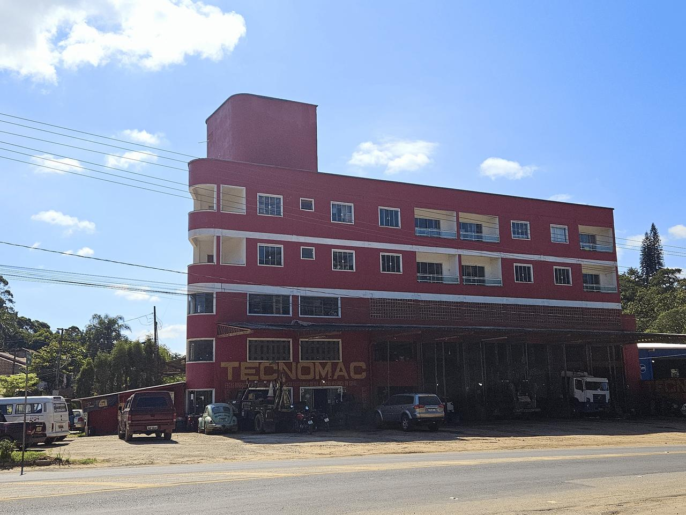
Canelinha · Tijucas — SC
Seu caminhão de volta à estrada, com quem entende de diesel.
Oficina especializada em caminhões, ônibus, caminhonetes e utilitários a diesel. Mecânica, injeção eletrônica, bombas injetoras, borracharia, guincho e peças no mesmo lugar.
- +40anos de experiência em diesel
- 4,1nota no Google (15 avaliações)
- 2unidades: Canelinha e Tijucas
- Garantiaem todos os serviços realizados
Quem somos
Mais de 40 anos cuidando de quem move a região
A Tecnomac é referência em manutenção e reparo de veículos a diesel em Canelinha e região. Desde o início, o compromisso é o mesmo: serviço técnico de qualidade, atendimento próximo e respeito ao tempo de quem trabalha na estrada.
Atendemos caminhões, ônibus, caminhonetes e utilitários das principais marcas. Na mesma estrutura você encontra oficina mecânica, borracharia, guincho e loja de peças, o que reduz o tempo do seu veículo parado.
- Foco em segurança e durabilidade do veículo
- Orçamento claro antes de iniciar o serviço
- Peças de qualidade com procedência
Serviços
Tudo o que o seu veículo diesel precisa
Do diagnóstico à entrega, com mão de obra qualificada e peças de qualidade.
-
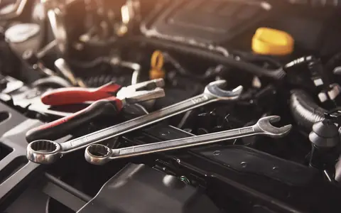
Mecânica em geral
Manutenção preventiva e corretiva de motor, embreagem, diferencial e suspensão de veículos pesados.
-
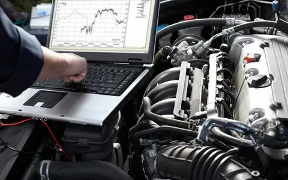
Injeção eletrônica
Diagnóstico com scanner e manutenção completa do sistema de injeção eletrônica.
-
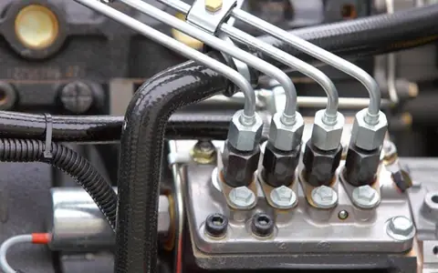
Bombas injetoras
Manutenção e reparo de bombas injetoras para recuperar desempenho e economia.
-
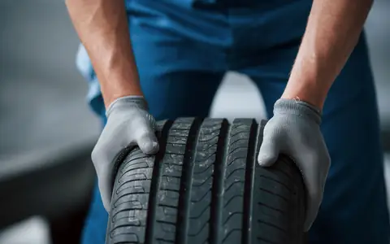
Borracharia
Conserto, troca e reparo de pneus de caminhões, ônibus e utilitários.
-
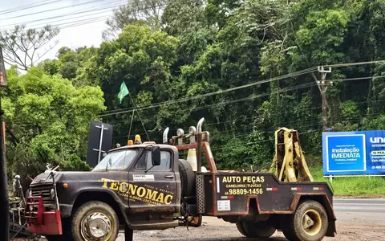
Guincho
Remoção rápida e segura do seu veículo quando ele não pode seguir viagem.
-
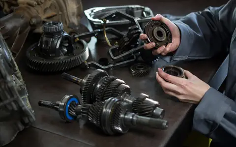
Troca de peças
Substituição de componentes com peças de qualidade, direto do nosso estoque.
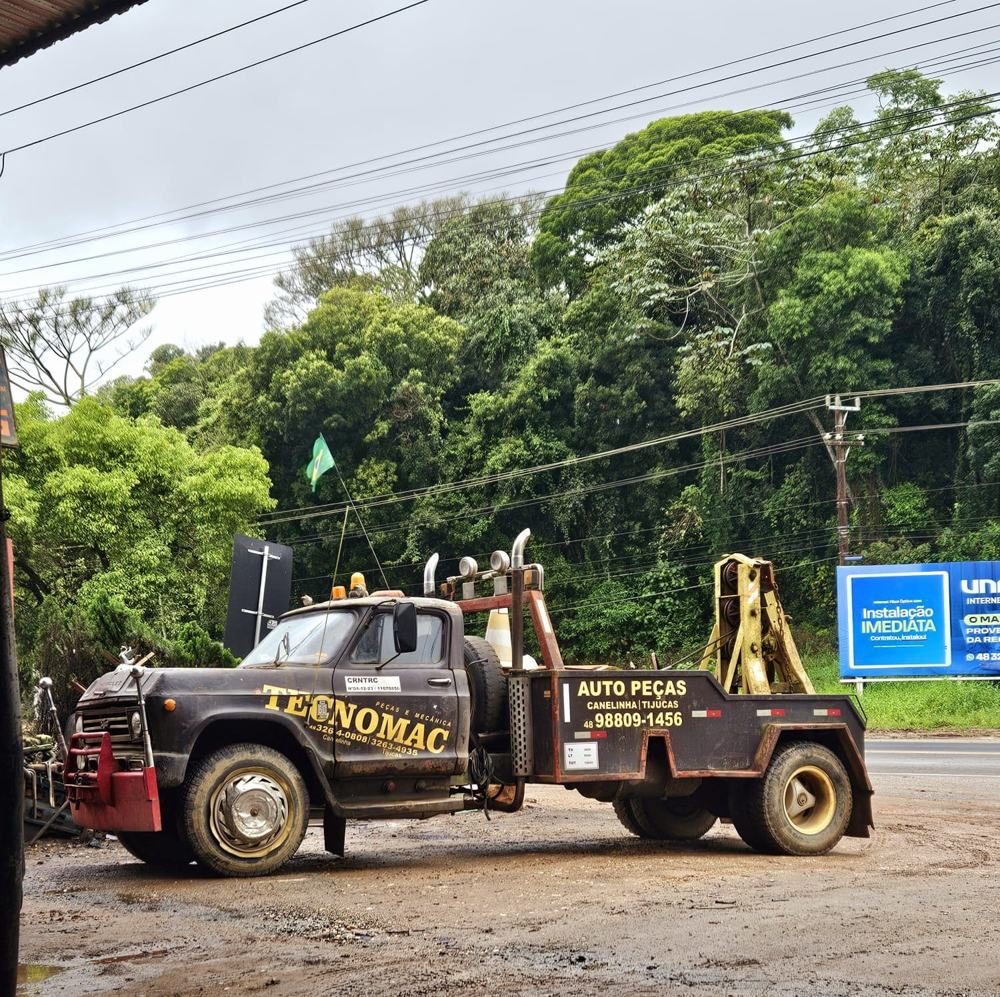
Guincho Tecnomac
Quebrou na estrada? A gente busca.
Guincho próprio para levar seu veículo direto para a oficina, onde o diagnóstico e o reparo já começam.
Loja de peças
Não achou a peça? Na Tecnomac você encontra.
Estoque para veículos a diesel nas unidades de Canelinha e Tijucas. Consulte disponibilidade e preço pelo WhatsApp.
Consultar uma peça-
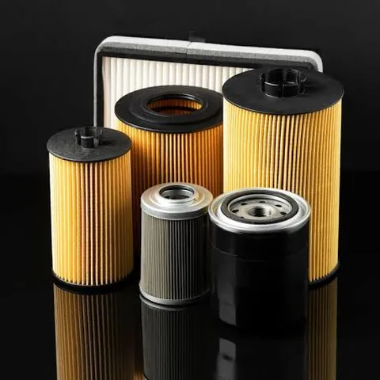
-
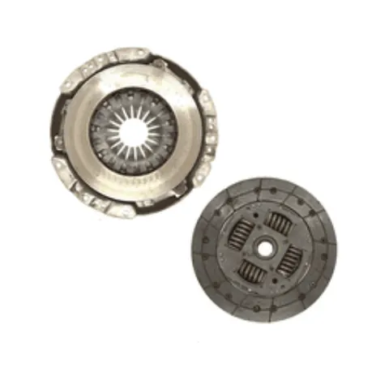
-
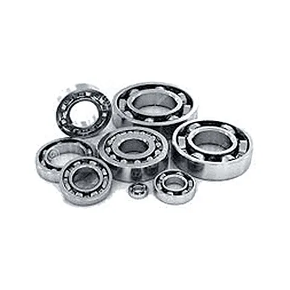
-
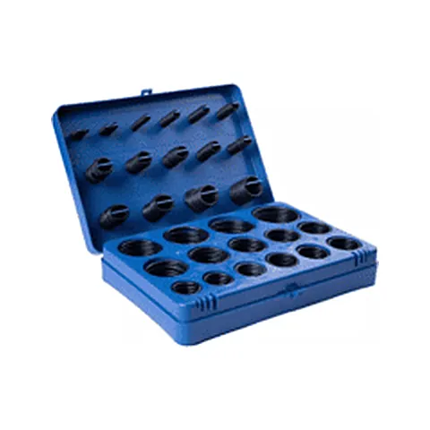
-
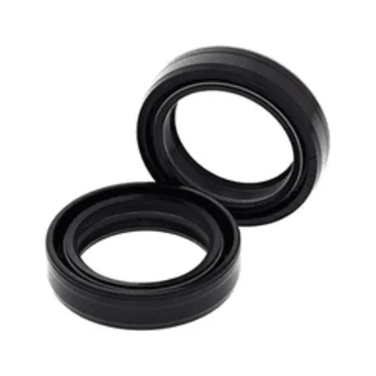
-
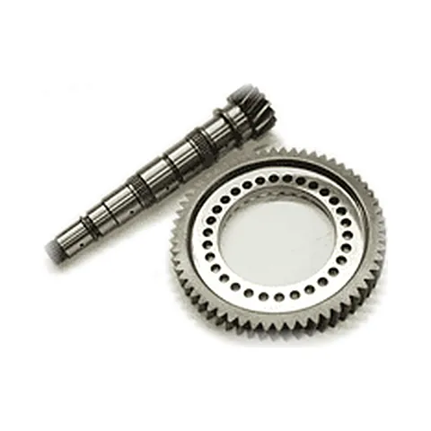
-
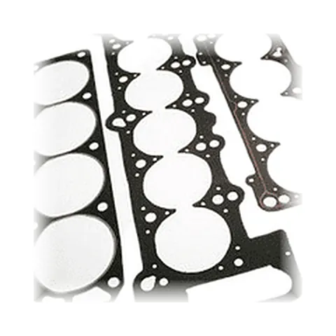
-
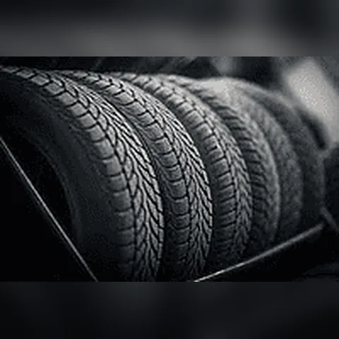
-
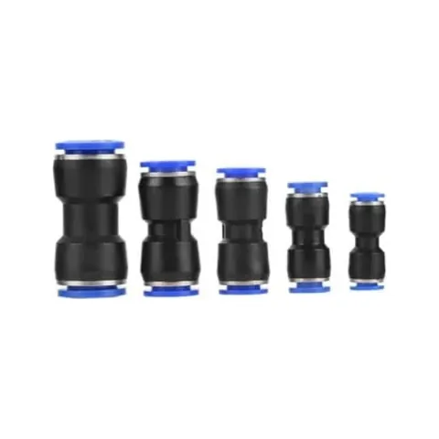
-
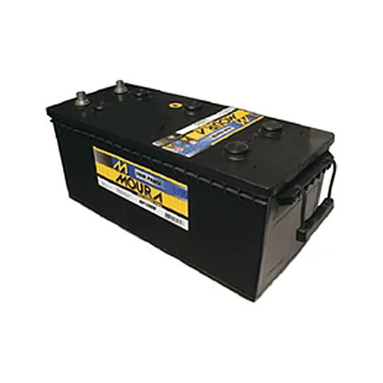
-
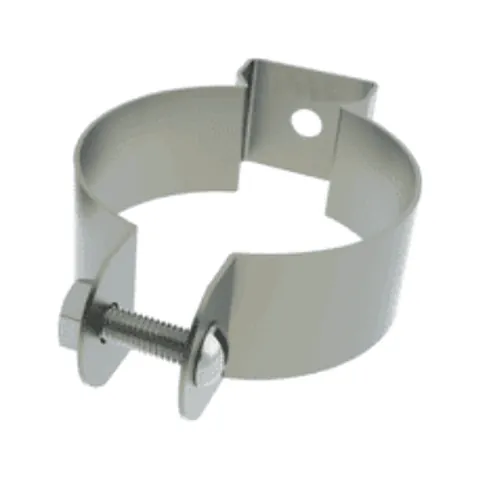
-
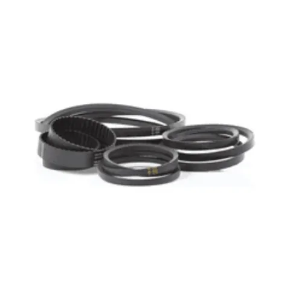
-
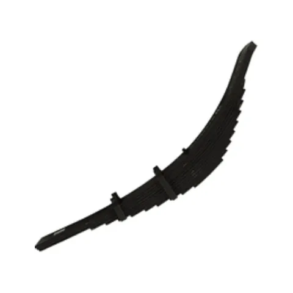
-
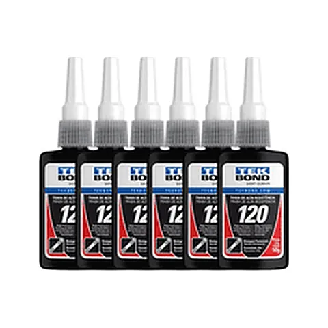
-
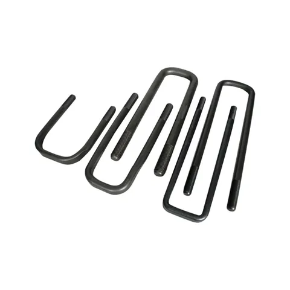
-
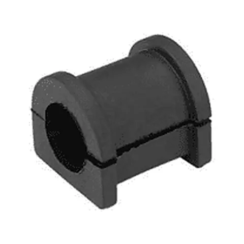
-
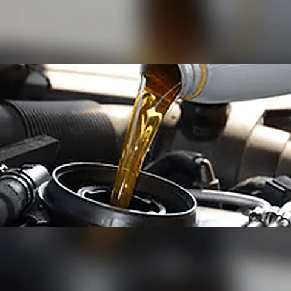
-
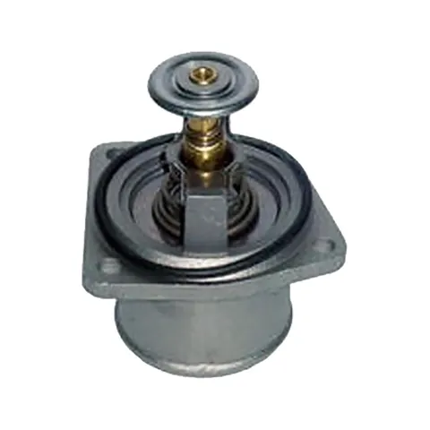
Por que a Tecnomac
Menos tempo parado, mais tempo rodando
-
Agilidade
Oficina, peças e guincho no mesmo endereço: o serviço começa sem esperar fornecedor.
-
Equipe técnica
Mecânicos experientes em motores diesel e nas principais marcas do mercado.
-
Estrutura completa
Prédio próprio às margens da SC-410, com pátio para caminhões e ônibus.
-
Atendimento transparente
Orçamento explicado antes do serviço e garantia no que é feito.
Galeria
Nossa estrutura e nosso trabalho
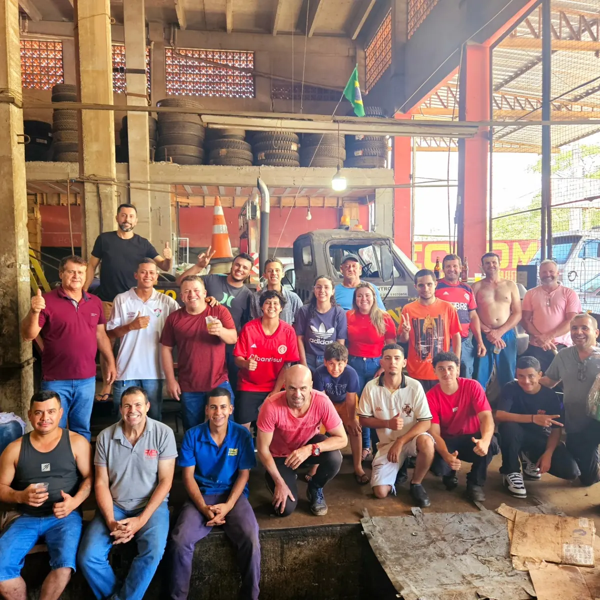
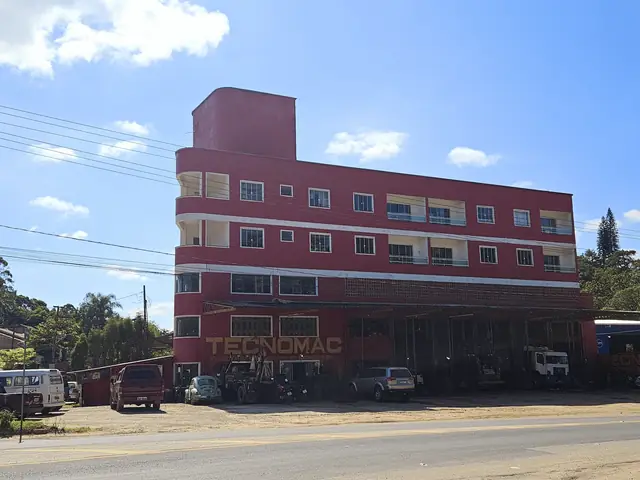
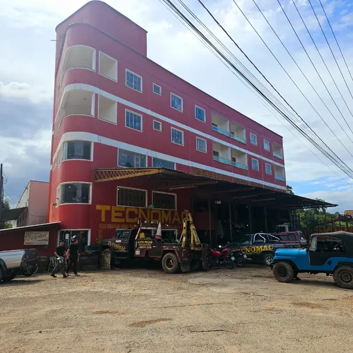
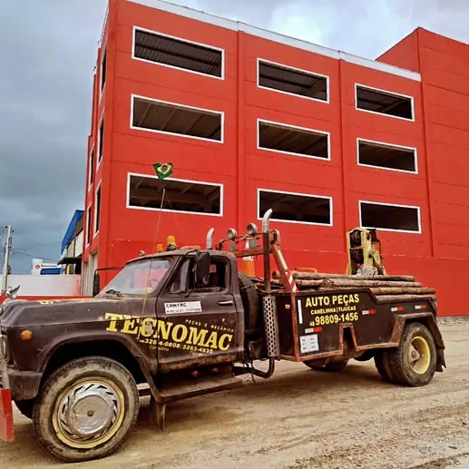
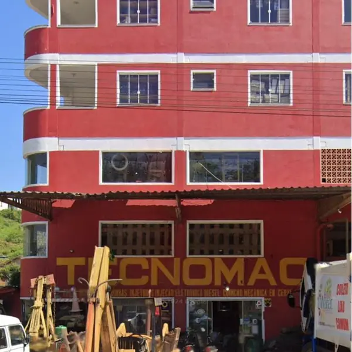
“Muito rápidos, eficientes e ótimo preço.”
“Serviço bem feito, mecânicos de confiança.”
“Nota 10 em atendimento e agilidade.”
Localização e contato
Fale com a Tecnomac
Peça um orçamento, consulte uma peça ou agende o atendimento do seu veículo.
-
WhatsApp(48) 3264-0808
-
Telefone(48) 3264-0806
-
E-mailtecnomac01@hotmail.com
-
Loja – Tijucas/SCAvenida Coleira, nº 794 – Praça
Horário de atendimento
| Segunda a sexta | 07:00–11:50 · 13:00–17:50 |
|---|---|
| Sábado | 07:00–11:50 |
| Domingo | Fechado |